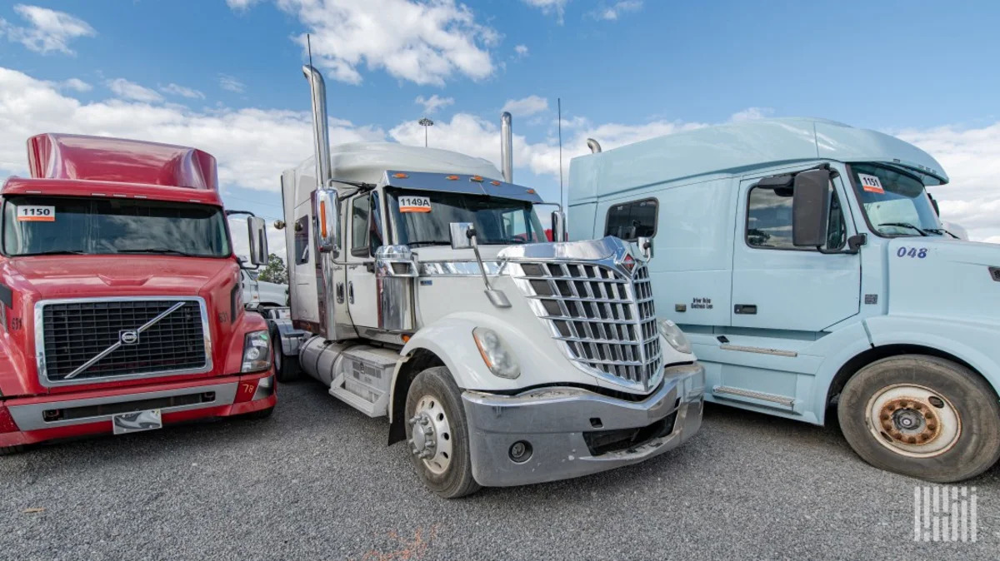
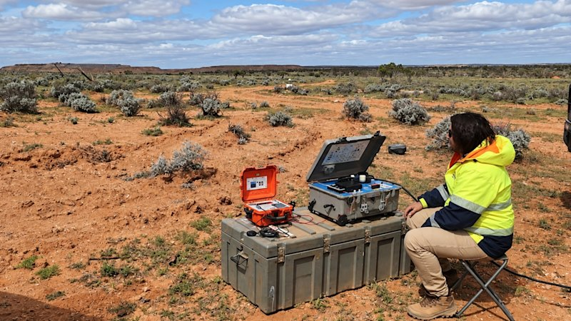
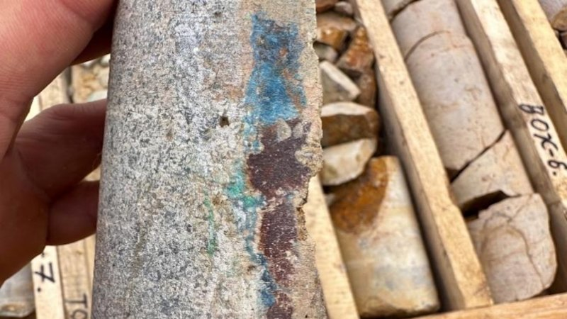

MARKET CONNECTION
SOURCE 070
Bank exits squeeze truck financing for mid-size fleets

Read original reporting ↗MORE REPORTING
Continue through the source set
The Guardian · 2026-09-15 03:14:11 UTC
Australian politics live: Pauline Hanson offers qualified apologies to Albanese and Indigenous Australians over podcast comments
VIEW STORY ↗
SMH Business · 2026-09-15 12:54:20+10:00
Broken Hill Gold turns up heat on deeper SA gold-copper hunt
VIEW STORY ↗ABC News · 2026-09-15 02:49:09 UTC
Breaking: Snowtown serial killer James Vlassakis to be released
VIEW STORY ↗ABC News · 2026-09-15 02:48:08 UTC
Former ADFA cadet accused of secretly filming women faces more charges
VIEW STORY ↗
SMH Business · 2026-09-15 12:48:02+10:00
Sarytogan lands second massive 318m Kazakh copper hit
VIEW STORY ↗ABC News · 2026-09-15 02:34:07 UTC